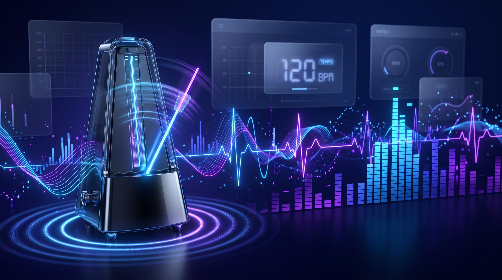

BPM Tapper
Find the exact tempo of any song in seconds. Tap the button or hit your spacebar to the beat of the music to calculate the Beats Per Minute.
000
BPM (Beats Per Minute)
Tap Here
(or press Spacebar)
Find the exact tempo of any song in seconds. Tap the button or hit your spacebar to the beat of the music to calculate the Beats Per Minute.
Use your mouse on mobile or just tap the Spacebar on your desktop for highly accurate tempo tracking.
Averaged algorithm calculates the BPM instantly after just three consecutive taps on the beat.
Like a real metronome, our BPM counter works entirely in your browser without requiring an internet connection.

Whether you are a DJ planning a seamless transition, a music producer matching loops in your DAW, or a runner creating the perfect workout playlist, knowing the exact Beats Per Minute (BPM) of a track is essential. While many modern software platforms auto-analyze audio files, they often miscalculate complex rhythms or require you to upload the file to a server. Our free BPM Tapper offers a fast, analog-style solution: you become the algorithm.
By simply listening to the music and tapping along to the rhythm using your mouse, touchscreen, or spacebar, this tap tempo tool calculates the average time between your strikes to provide an incredibly accurate BPM reading in real-time. Because it relies on human rhythm rather than machine analysis, it is exceptionally good at finding the true tempo of live recordings, acoustic sessions, or tracks with shifting time signatures that confuse digital analyzers.
Follow these instructions to accurately measure the beat of any audio track:

Focus on the bass drum or the snare to find the core pulse of the song.
Play your song and nod your head or tap your foot to the core rhythm. This is usually driven by the kick drum or bassline.
Click the large "Tap Here" box or press the Spacebar on your keyboard consistently in time with the beat you identified.
Continue tapping for at least 5 to 10 seconds. The tool averages your taps; the longer you tap, the more accurate the BPM counter becomes.
Note the large number displayed on the screen. If the song changes tempo or you want to measure a new track, click "Reset Counter".
Fitness enthusiasts use a BPM calculator to pace their workouts. For instance, a brisk walk pairs well with songs around 100-120 BPM. Jogging requires a tempo of 120-140 BPM, while intense sprinting or cycling often matches tracks hitting 150-170 BPM. Curating your playlist by tempo prevents you from unintentionally slowing down or burning out too quickly.
If you tap to a hip-hop track and get 70 BPM, but your DJ software says it's 140 BPM, neither is wrong. This is the difference between half-time and double-time counting. Electronic genres like Dubstep and Trap are often produced at 140-150 BPM but are felt and danced to at half that speed (70-75 BPM).
To get the most precise reading from our find song tempo tool, keep these acoustic principles in mind:
BPM stands for Beats Per Minute. It is the universal standard used by musicians, DJs, and producers to measure the tempo (speed) of a piece of music. A song with 60 BPM has exactly one beat per second, similar to a ticking clock.
Our tool records the precise millisecond timestamp of each tap. It then calculates the time difference between your recent taps, averages those intervals to eliminate human error, and converts that average into a Beats Per Minute value.
Humans are not perfect metronomes. Your first few taps might be slightly off-beat, causing the initial number to fluctuate. As you continue tapping (usually after 4 or 5 taps), the algorithm averages the inputs, and the number will stabilize to the true tempo.